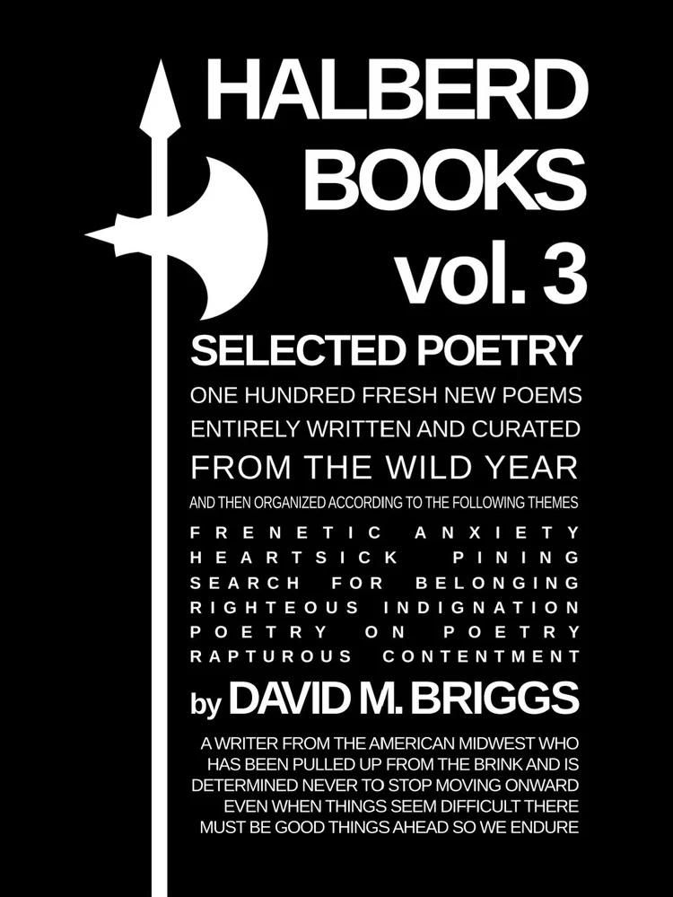

The longest, most ambitious poetry volume from David M. Briggs. yet, Halberd Books vol. 3 resents one hundred never-before-compiled poems about breaking down daily, suffering desperate infatuation, clawing out a home, facing down injustice, scratching down stories, and finding safety in spite of it all. Profane, humane, and slightly deranged, Halberd Books vol. 3 is an impassioned howl of a book.
"David M. Briggs does it again... expertly weaves stories that flow perfectly into one another... paints a spectacular picture with words."
—Emily Grace, author of Violent in the Ways I Still Love You
"A wonderful collection of poetry... the author rages with empathy."
—Joshua Amos Graff, author of Poems Winter 2024
"Breathlesly romantic, angry, lustful, and true."
—Laura E. Price, author of Cobbler's Hill